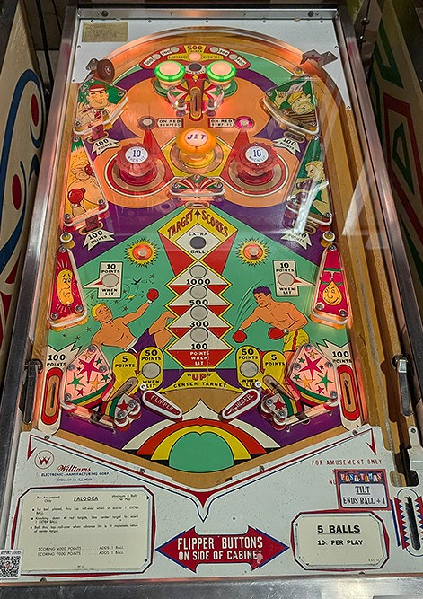

Hit the center drop target as many times as you can. The center drop target's value is raised by making the top lane when it is lit (every 5th 1-point switch, including the passive bumpers on either side of the lane) or by hitting all 4 red side drop targets. The center drop target is only raised at the start of the game or after using one of the kickers located behind the hinge of the flippers.
The below picture of Palooka's playfield was taken from the Open Pinball Database.

The skill shot is to plunge the ball into the single rollover lane at the top of the playfield. 1-point switch hits anywhere in the game rotate whether the lane is lit for 100, 200, 300, or 400 points, or 500 points plus an Advance. On the first ball of the game only, when the center top lane is lit for 500 points plus Advance, it is also lit for extra ball. Features that give 1 point and rotate the top lane's value include the green passive bumpers on either side of the top lane, the yellow pop bumper, unlit red pop bumpers, unlit lower side walls, and lower rollover buttons. The Advance increases the value of the center drop target, explained later.
The yellow bumpers always scores 1 point. Red bumpers score 1 point, or 10 when lit. To light these bumpers for the remainder of the current ball, press either of the On Red Bumpers rollover buttons located just above the bumpers themselves.
The four red drop targets in the corners of the table score 100 points. The center white drop target scores the highest lit value, which starts at 100 points and can be advanced to 300, then 500, then 1,000. When the center drop target is knocked down, it stays down until the ball enters either of the kickers located just behind the flipper hinges. To advance the center target's value, either make the top lane when it is lit for 500 & Advance, or knock down all 4 red drop targets. Knocking down all of the red drop targets also means that the next hit to the center white drop target scores an extra ball.
Advancing the center target value to at least 300 points lights the lower left and lower right side walls to score 10 instead of 1 for the rest of the game. The center target value does not reset at any point during the game, even after being collected or when a ball drains.
There are no in lanes or slingshots. Out lanes score 100 points. Behind the flipper hinges are kickers that reraise the center drop target, score 5 points (or 50 when lit; they are lit when the top rollover lane is also lit for 500 & Advance), and fire the ball at the opposite lower red drop target. There is no kickback, center post, or free ball gate.
There is no end of ball bonus. Since this is an add-a-ball game, multiple extra balls can be earned per ball in play subject to the game's overall limit of 10 balls remaining. Tilt ends the ball in play and subtracts one further ball from your remaining total.